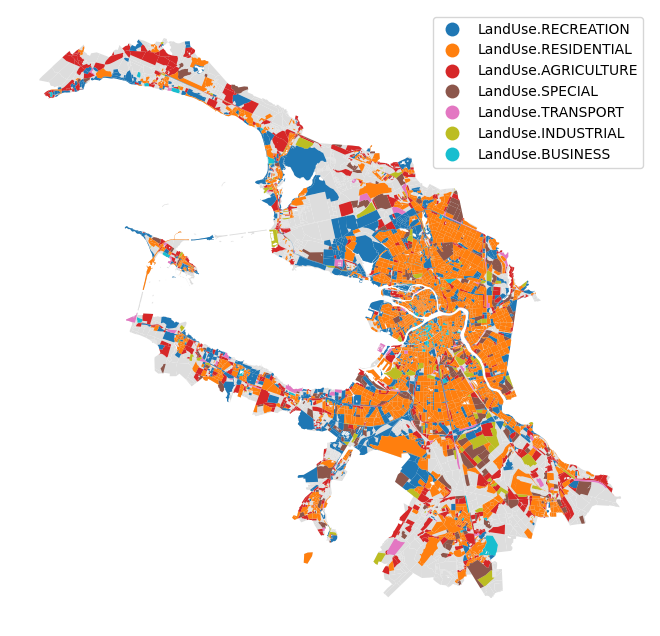

Land use similarity
[1]:
import pandas as pd
blocks_gdf = pd.read_pickle('./../../data/saint_petersburg/blocks.pickle')
[2]:
from blocksnet.analysis.land_use import land_use_similarity
similarity_df = land_use_similarity(blocks_gdf)
similarity_df.head()
2025-09-19 17:58:32.754 | INFO | blocksnet.analysis.land_use.similarity.core:_preprocess_and_validate:29 - Preprocessing and validating input data
2025-09-19 17:58:33.116 | INFO | blocksnet.analysis.land_use.similarity.core:_preprocess_and_validate:38 - 60/81 service types are provided
[2]:
| LandUse.RESIDENTIAL | LandUse.BUSINESS | LandUse.RECREATION | LandUse.INDUSTRIAL | LandUse.TRANSPORT | LandUse.SPECIAL | LandUse.AGRICULTURE | land_use | probability | |
|---|---|---|---|---|---|---|---|---|---|
| 0 | 0.000000 | 0.000000 | 0.000000 | 0.000000 | 0.000000 | 0.0 | 0.000000 | None | 0.000000 |
| 1 | 0.000000 | 0.097129 | 0.258199 | 0.154303 | 0.166667 | 0.0 | 0.000000 | LandUse.RECREATION | 0.258199 |
| 2 | 0.000000 | 0.000000 | 0.000000 | 0.000000 | 0.000000 | 0.0 | 0.000000 | None | 0.000000 |
| 3 | 0.000000 | 0.000000 | 0.000000 | 0.000000 | 0.000000 | 0.0 | 0.000000 | None | 0.000000 |
| 4 | 0.163299 | 0.158610 | 0.105409 | 0.000000 | 0.000000 | 0.0 | 0.149071 | LandUse.RESIDENTIAL | 0.163299 |
[3]:
ax = blocks_gdf.plot(color='#ddd', figsize=(10,8))
blocks_gdf[['geometry']].join(similarity_df).plot('land_use', ax=ax, legend=True).set_axis_off()
